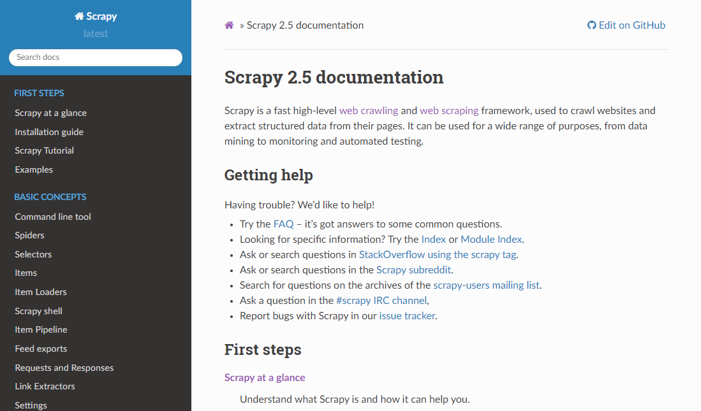
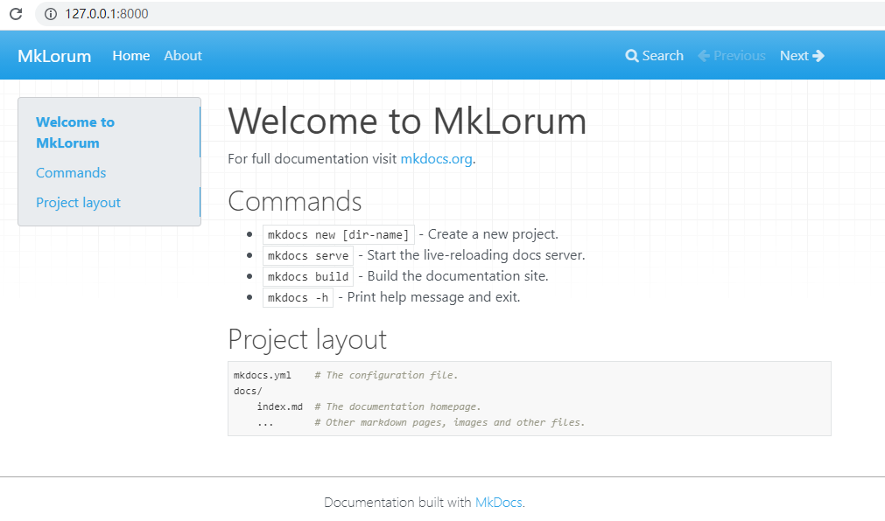
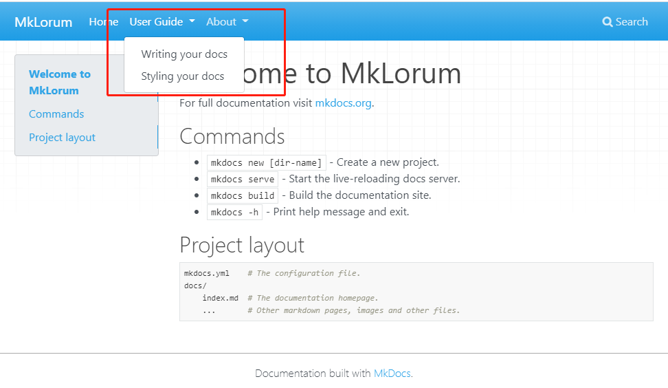

文档的重要性无容置疑，而且文档编写能力是程序员最重要的软实力之一。不过编写文档不仅枯燥，而且后期制作难度高，谁都不愿意做。
今天我们来聊一聊，如何利用 markdown 高效地编写阅读方便结构完整，甚至支持关键字搜索的 Web 文档吧，让写文档上瘾。开干！
文档框架
同博客框架 WordPress、Hexo 等一样，Web 文档也有自己的框架，如比如 Java 的 Javadoc，Python 的 pydoc，以及Python-sphinx
对于 Python 有专门文档标记语言 reStructuredText（RST），常见的 Python 各种库和工具的帮助文档基本都是用 RST 所写。
例如 Scrapy 的文档

不过，用 RST 编写对于已经会了 Markdown（更为流行） 的读者来说，有点浪费，而且两者的语法差异较大，容易造成记忆冲突。
幸运的是有了 mkdocs，不仅能轻松制作类似 Scrapy 帮助文档的文档项目，而且支持 markdown 语法。
Mkdocs
MkDocs 是一个快速、简单、可以效果惊艳的采用 Markdown 语法编写的静态站点生成器，主要用于构建项目文档。
环境搭建
安装了 Python，有了 pip，运行以下命令就可以安装 MkDocs 了：
1 | pip install mkdocs |
查看 MkDocs 版本：
1 | mkdocs --version |
如上，即 MkDocs 安装正常了。
创建项目
就可以用 MkDocs 创建一个文档项目了。
命令行进入需要创建文档项目的目录，然后执行：
1 | mkdocs new testdocs |
这样就在当前目录下，生成了一个 testdocs 文件夹，就是创建的文档项目。
项目目录结构如下：

mkdocs.yml 为配置文件
docs 文件夹中为文档文件目录，文件使用 markdown 编写。
文档预览
进入 testdocs 目录（也就是创建的文档项目目录，你的可能不同），执行 mkdocs serve：
1 | mkdocs serve |
将启动一个 Web 服务器，用于预览 testdocs 文件项目，效果如下：

很惊艳吧，而且支持多种站点分格。
文档预览会在文档发生变化时自动刷新，可以随时看到最新效果。
编写文档
搭建好了项目，就可以开始编写文档了，总体和写这篇文章差不多。
配置
mkdocs 的配置简单明了，采用 yml 格式：
1 | site_name: MkLorum |
需要注意的是 nav 配置，当文档比较复杂时，可以通过嵌套的方式。
例如在 Home 下还有子菜单，menu1 和 menu2，可以配置成：
1 | nav: |
效果如下：

- 如果菜单名中有空格需要用引号(单双皆可)括起来
- 文档文件不要同导航结构配合，可以为导航配置相对文件路径
- 菜单层级可以无限嵌套
一些约定
文档编写过程和写一般的 markdown 文章差不多，有一些需要注意的地方或是技巧需要说明一下。
-
站点布局默认情况下，即在不配置导航 (nav) 的情况下，会按照文件名，目录结构生成导航菜单
-
站点首页默认情况下，必须创建一个 index.md 作为站点首页。同时也支持 README.md 作为首页，会将期转化为 index.html。如果 index.md 和 README.md 同时存在，将忽略 README.md
-
非 markdown 文件
markdown 文件，即扩展名为 md 的文件，会被转化为 html。非 markdown 文件，会被原封拷贝，不做任何修改 -
内部链接如果需要引用另一个文件，只需要按照 markdown 链接的方式，连接到这个文件就可以了，例如
[详情请参考](./detail.md)。不要担心文件名，因为生成站点时会自动换成 html 文件路径
生成站点
编写好文档后，需要将其生成为站点目录，即编译成 html 文件，才能发布。
使用 mkdocs 非常方便，只需要在项目目录中，执行以下命令即可:
1 | mkdocs build |
完成后，就会生成一个 site 文件夹，其中就是生成好的站点文件
发布
写好文档，需要发布才能让更多的人看到和使用。
这里介绍两种发布方式，可以根据实际情况选择。
自主发布
上一节，说明了如何生成站点，那么只要将生成好的站点文件，部署到服务器上就可以。
然后配置 Web 服务器的虚拟目录，例如常用的 nginx
1 | location /docs/ { |
这样就可以通过 www.yourhost.com/docs 访问到文件了（假如你已经有了域名 yourhost.com 并解析到了服务器上）。
如果是在公司内部的话，只要将站点文件夹拷贝到网络网络管理员指定的位置，就可以了。
自主发布需要更多的资源和知识，不过更自由和保密
Read the Docs
如果自主发布比较麻烦，可以选择 Read the Docs。
它是一个专门为文档而生的 Web 服务，可以便捷地发布文档，只需要注册一个账号。
Read the Docs 提供公开和商业两种版本，商业版可以发布私有文档，否则只能发布公开的文档，可以根据实际情况做出选择。
Read the Docs 支持 mkdocs 创建的文档项目，即，意味着不需要对 mkdocs 项目进行生成站点操作，就可以发布，这样就方便多了。
只需要在发布前，创建一个 Read the Docs 配置文件 .readthedocs.yml 就可以了。
1 | # Required |
mkdocs用于指定文档使用 mkdocs 编写configuration指定 mkdocs 文档项目的配置文件python为可选项，如果文档需要 python 运行环境的话可以配置，如不需要可以不配置
更多配置请参考 Read the Docs 配置。
然后将 mkdocs 项目用 github 做版本管理，这是因为 Read the Docs 目前只支持通过 github 导入文件。
最后在 Read the Docs 的 Add Projcet 中，选择 Github 中的对应库，按照说明操作即可。
如果顺利将会获得一个文档的访问网址。
总结
大多数人讨厌编写文档，不仅是因为编写文档很枯燥，而且也是因为文档形式多样，后期制作成本很高，容易有畏难情绪。
利用 mkdocs 和 Read the Docs 可以让我们将注意力和精力集中在文档编写本身上，而解放了文档后期制作的成本投入，而且还能更方便的让更多的人浏览，让我们的价值更大的体现。
期望这篇文章，能在文档编写上给你帮助和启示，让自己的价值更大化，比心。